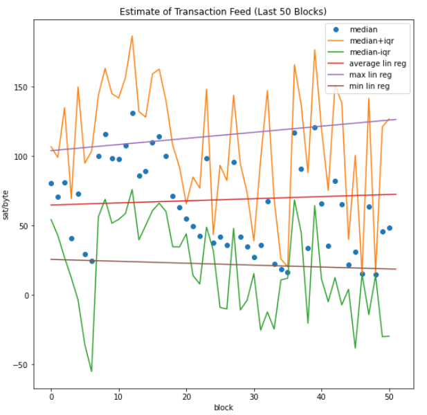

Bitcoin
Ein Blick hinter die Kulissen
Artiom Blionovas, Marten Budelmann, Daniel Hilgert
Created: 2021-02-11 Do 21:11
Table of Contents
Realisierung
- Nutzung der REST APIs von:
- blockchain.info
- mempool.space
- walletexplorer.com
Cashflow Analyse
- Nutzung von Bitcoin für illegale Zwecke
- seit 2018 ca. 210.000 gemeldete Adressen auf bitcoinabuse.com

Figure 1: Nutzung für illegale Zwecke
Aufbau einer Transaktion
- eine Transaktion ist eine n:m Beziehung bei Input- zu Outputadressen

Figure 2: Beispiel einer Transaktion
Wiederverwendung von Adressen
- Adressen möglichst nicht wiederverwenden ("bitcoin invoice" anstatt "bitcoin address")
- Verwendung von deterministischen Wallets mit Seed phrase
Change Adressen

Figure 3: Change Adressen
Verfolgen des Geldflusses
Some linking is still unavoidable with multi-input transactions, which necessarily reveal that their inputs were owned by the same owner. (Nakamoto 2008)

Figure 4: Change Adressen
Transaction Fees
Vorhersage der Gebühren pro Byte
- Transaktion Kosten pro Byte
- Median und Interquartilsabstand
- Approximation mit linearer Regression

Figure 5: Vorhersage Gebühren pro Byte
Zusammenhang zwischen Größe und Kosten einer Transaktion
- Alle Transaktionen der letzten 50 Blöcken nach Größe kategoriesieren
- Anteil von Transaktionen in %, Gebühren pro Byte, Bestätigungszeit
- Ergebnis: Gebühren pro Byte hängt gerin von der Größe ab, aber nicht signifikant
- Mögliche Erklärung: Miner versuchen die Blöcke möglichst dicht zu befüllen
Front/Backend
- Flask
- schnelles Prototyping
- für ein kleines Projekt vollkommen ausreichend
Probleme
- Statuscode 429
- Verbesserung der Anonymität
- Effizienz bei der Verarbeitung von großen Datenmengen
- Verbindung Front-/Backend
Live Demo
Ausblick
- Blockchain/Mempool herunterladen
- Einbezug vom Mempool in die Statistik
- Bigdata
- Transkationen ohne Gebühren: IOTA und andere
- Layer 2: Bitcoin Lightning Network und andere
Geldfluss Analyse

Figure 6: Anonymitäts Analyse von Reid und Harrigan, 2012
- Chainalysis: Unternehmen, welches sich auf die Bitcoin Analyse spezialisiert hat